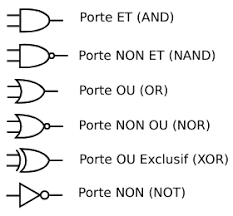

porte AND:
Une porte AND est comme une règle qui dit : "Tous les éléments doivent être allumés pour que la lumière s'allume." Imagine que tu as deux interrupteurs (A et B). La lumière (la sortie) s'allume seulement si les deux interrupteurs sont allumés (1). Si l'un des interrupteurs ou les deux sont éteints (0), la lumière reste éteinte.
porte NAND:
Imaginons que nous ayons deux interrupteurs (A et B). La lumière (la sortie) s'allume dans tous les cas sauf lorsque les deux interrupteurs sont allumés (1). C'est comme dire "Nous n'allumerons pas la lumière si les deux interrupteurs sont allumés."
porte OR:
Si A ou B est allumé, la lumière s'allume. Par contre, si A et B sont allumés en même temps, la lumière s'éteint. En résumé, la lumière s'allume dans tous les cas sauf lorsque les deux interrupteurs sont allumés simultanément.
porte NOR:
La lumière s'allume uniquement lorsque les deux interrupteurs sont éteints. Dans tous les autres cas, la lumière reste éteinte. En d'autres termes, la lumière ne s'allume que si A et B sont tous les deux éteints.
porte XOR:
La lumière s'allume seulement lorsque un seul des interrupteurs est allumé. Si les deux interrupteurs sont éteints ou si les deux sont allumés, la lumière reste éteinte. En d'autres termes, la lumière s'allume si A et B sont dans des états différents (l'un allumé, l'autre éteint).
porte XNOR:
La lumière s'allume seulement si les deux interrupteurs sont dans le même état, c'est-à-dire tous les deux allumés ou tous les deux éteints. Si les interrupteurs sont dans des états différents (l'un allumé et l'autre éteint), la lumière reste éteinte. En d'autres termes, la lumière s'allume lorsque A et B ont la même valeur.